Authors: Prasanna Venkatesan, Tanvir H. Pantha, Po-Kai Hsu, Sumukh Pinge, Zheyu Li, Chinsung Park, Priyankka Ravikumar, Hari Jayasankar, Lance Fernandes, Weihong Xu, Zihan Xia, Flavio Ponzina, Keming Fan, Amrit Garlapati, Huy Tran, Taeyoung Song, Mengkun Tian, Hang Chen, Winston Chern, Kijoon Kim, Kwangyou Seo, Suhwan Lim, Kwangsoo Kim, Wanki Kim, Daewon Ha, Duygu Kuzum, Shimeng Yu, Mingu Kang, Tajana Rosing, Sourav Dutta, Asif Khan
Type: both · Category: other · PDF: https://arxiv.org/pdf/2610.05002v1
Analysis basis: full PDF text, analyzed in chunks
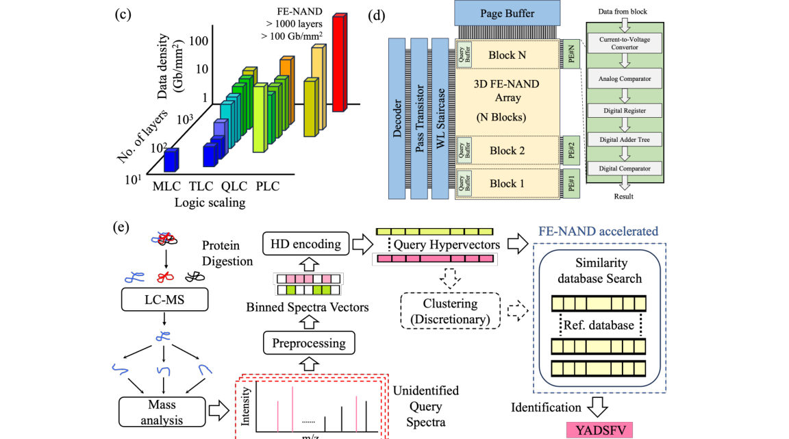
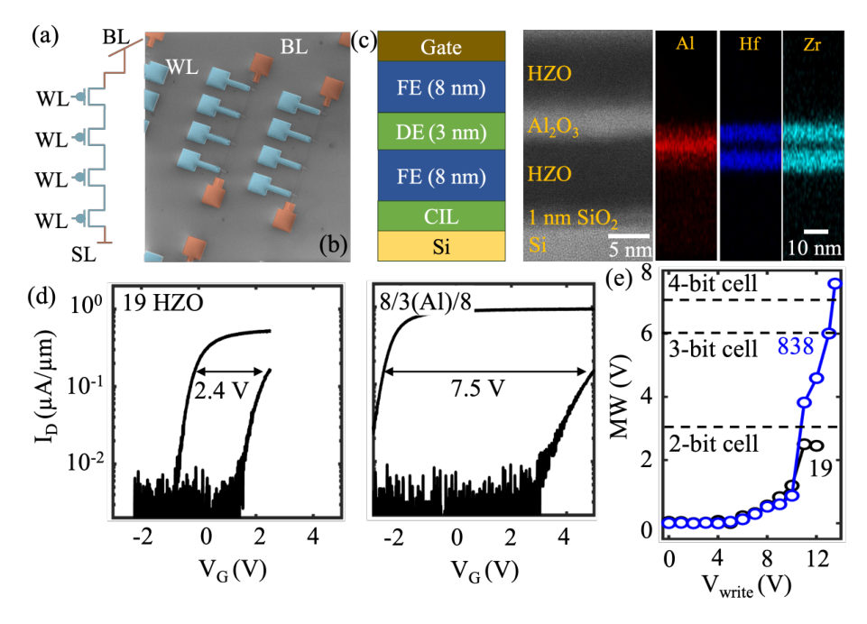
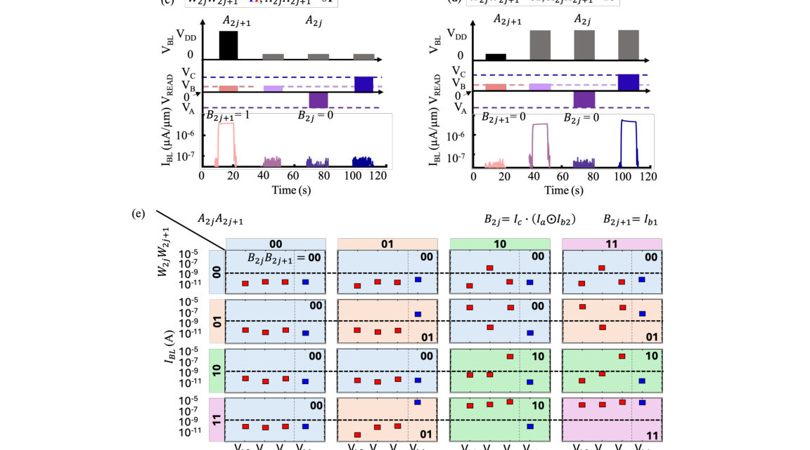
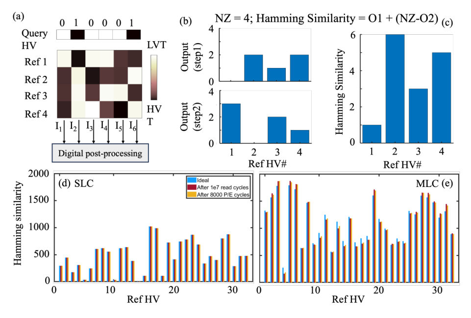
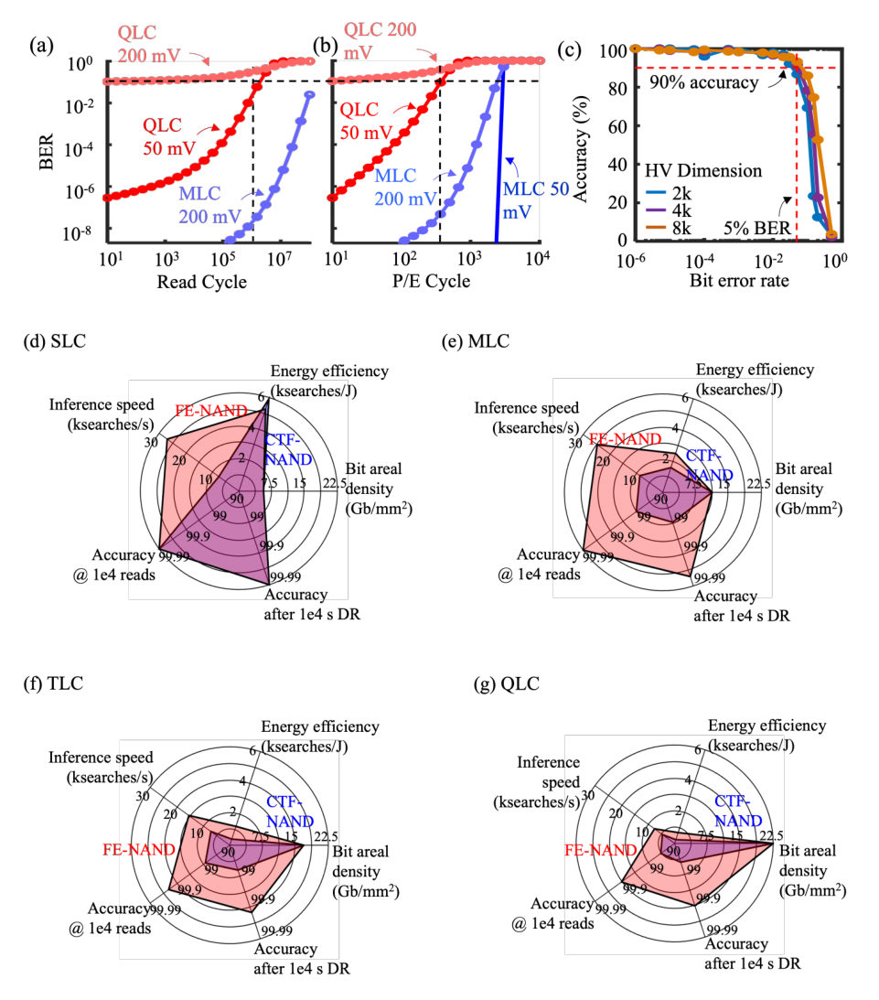
Summary. This work proposes using Multi-bit Ferroelectric-NAND (FE-NAND) memory as a viable in-storage compute architecture to overcome the bottlenecks of traditional von Neumann computing for massive database searches. By engineering the FE-NAND stack, the authors demonstrate high-density, energy-efficient computation of hyperdimensional similarity metrics. The results show massive speed and energy gains over current state-of-the-art solutions.
Why it may be interesting. Not directly relevant
Main problem. The growing demand for large-scale database search exposes fundamental limitations in von Neumann architectures due to memory bandwidth and energy constraints.
Main result. The proposed FE-NAND in-storage compute architecture achieves nearly 1,000x speedup and over 10,000x energy efficiency improvement for massive database search tasks.
Method. The authors demonstrate in-situ multi-level cell (MLC) dot product operations and calculate Hamming similarity using planar Ferroelectric NAND (FE-NAND) strings.
Model / system. The platform utilizes engineered FE-NAND strings (with $ ext{Al}_2 ext{O}_3$ dielectric insertion) to enable high-density, energy-efficient in-storage computation for hyperdimensional data processing.
Key observables. Search accuracy (>90% at QLC), Speedup ($\sim 1000 imes$), Energy Efficiency Improvement ($>10,000 imes$), Memory Window (MW) ($\sim 7.5$ V).
Important parameters / regimes. TB-scale datasets, QLC/TLC logic levels, $10^4$ P/E cycles, $14$ V programming voltage.
Assumptions / limitations. The planar device physics are assumed to be directly transferable to 3D vertical NAND architectures, and system performance relies on calibrated physics-based simulations.
Figures summary. Figures show SEM images of the FE-NAND strings, $I_D–V_G$ and MW–$V_{ ext{write}}$ characteristics demonstrating dielectric insertion and MW enhancement, and comparative performance plots against incumbent solutions.
Paper structure. The paper establishes the problem limitations, details the FE-NAND physical enhancement (dielectric insertion), demonstrates the core computation (MLC dot product), and finally benchmarks the system on large-scale search tasks, comparing it to other compute-in-memory approaches.
The growing demand for large-scale database search in data-intensive applications, ranging from proteomics to autonomous systems, has exposed fundamental limitations in von Neumann architectures due to memory bandwidth and energy constraints. Hyperdimensional (HD) computing offers a robust and parallelizable framework for such tasks, but its practical implementation remains challenged by high memory demands. Ultra-high-density, energy-efficient ferroelectric NAND (FE-NAND) memory provides a potential solution by enabling in-situ computation. We fabricate quad-level FE-NAND strings with wide memory windows, disturb resilience, and robust retention. Using these planar FE-NAND strings as building blocks, we experimentally demonstrate in-situ multi-level cell (MLC) dot product operations at the single-cell level and, using experimentally calibrated physics-based simulations, demonstrate Hamming similarity calculations between reference and query hypervectors (HV). This platform leverages the inherent error tolerance of HD computing to achieve >90% search accuracy even at high logic levels (TLC, QLC). When benchmarked on Open Modification Search (OMS) tasks in proteomics with TB-scale datasets, our system shows nearly 1,000x speedup and over 10,000x energy efficiency improvement compared to incumbent solutions. These results establish FE-NAND as a viable in-storage compute architecture for large-scale, high-dimensional data processing.
Authors: Jose D. Mella, Jose Luis Cabellos, Bernardo S. Mendoza, Salvador Barraza-Lopez
Type: theory · Category: statistical mechanics · PDF: https://arxiv.org/pdf/2610.05363v1
Analysis basis: full PDF text, analyzed in chunks
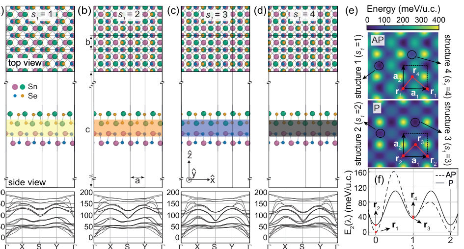
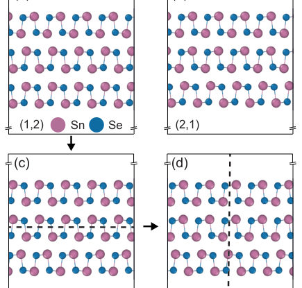
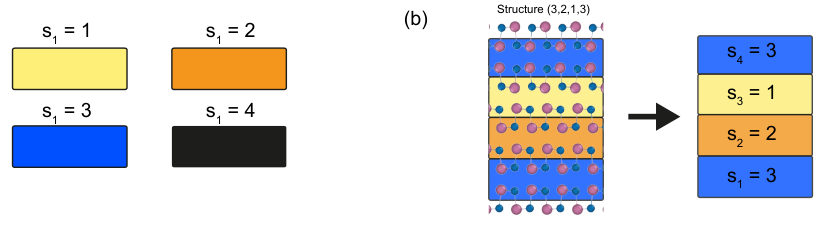
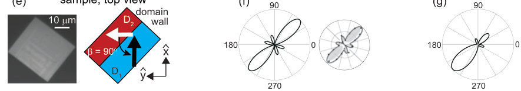
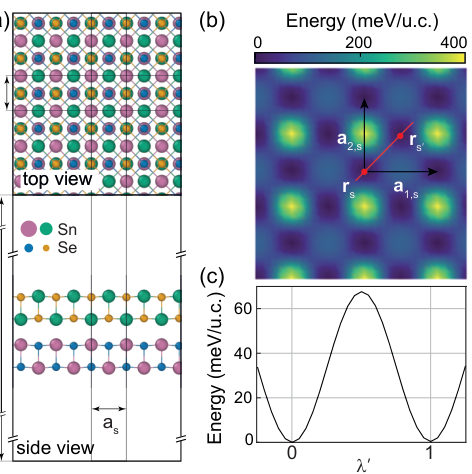
Summary. This work establishes a comprehensive theoretical framework to predict the structural and functional properties of few-monolayer stacks in materials like SnSe. By combining DFT with combinatorial methods and statistical mechanics, the authors map the energy landscape, showing how stacking sequences determine key properties like ferroelectricity and nonlinear optical responses. This provides a powerful predictive tool for designing novel layered quantum materials.
Why it may be interesting. The rigorous application of statistical mechanics (Boltzmann statistics) to predict the most probable structural phases in complex, interacting 2D systems is highly relevant for understanding phase transitions in quantum materials.
Main problem. To develop a general theoretical framework to classify and predict the stacking and physical properties (ferroelectric and nonlinear-optical) of few-monolayer stacks of identical (homo-) monolayers.
Main result. The study identifies that the stacking configurations are governed by a small number of point groups, and the energy landscape analysis predicts structural stability and transition barriers that suggest 'locking-in' at room temperature.
Method. The authors use Density Functional Theory (DFT) combined with a 'divide and conquer' combinatorial approach and Boltzmann statistics to map the energy landscape of stacking arrangements.
Model / system. The physical system is layered materials, specifically focusing on few-monolayer stacks of monochalcogenide (MC) compounds like SnSe. The model treats the stacking energy as a sum of pairwise interactions, allowing for the prediction of total energy for arbitrary stack numbers.
Key observables. Structural stability, symmetry (Layer Group and Point Group), interlayer stacking energy, in-plane electric dipole moment, and Second-Harmonic Generation (SHG) signals.
Important parameters / regimes. Energy barriers (e.g., > 40 meV/u.c.), temperature (finite-temperature effects), and the number of monolayers (N).
Assumptions / limitations. The analysis relies on DFT calculations for ground and metastable states, and the 'divide and conquer' model assumes identical lattice parameters between stacked layers.
Figures summary. Figures illustrate the four stable bilayer structures, energy landscapes showing transition barriers, and plots detailing the probability of different stacking configurations as a function of temperature.
Paper structure. The paper progresses by first establishing the DFT methods to find stable bilayers, then generalizing this to develop a combinatorial 'divide and conquer' approach for N-layers, and finally analyzing the resulting symmetry and temperature-dependent physical properties like ferroelectricity and SHG.
Structure leads to function: Knowing all possible ways to stack and slide identical monolayers enables the design of functionalities such as nonlinear optical responses and ferroelectricity in layered materials. Besides, mounting experimental evidence points to differing stacking configurations in few-monolayer and bulk samples. To exemplify the core concepts for stacking arbitrary monolayers, ground-state and metastable non-moiré SnSe stacks were first identified using density functional theory and employed to validate a ``divide and conquer'' combinatoral approach for determining the most probable stacking configurations in materials with an arbitrary number of identical monolayers. A small number of point groups accounts for all possible stacks, which explains experimental second-harmonic optical responses. Finite-temperature effects are also studied despite the granularity of available data. This comprehensive framework readily generalizes to provide a predictive description of arbitrary metastable few-homomonolayer stacks.
Authors: Aleksander Cząstkiewicz, Paweł Scharoch, Krzysztof Gawarecki
Type: theory · Category: other · PDF: https://arxiv.org/pdf/2610.06696v1
Analysis basis: full PDF text, analyzed in chunks
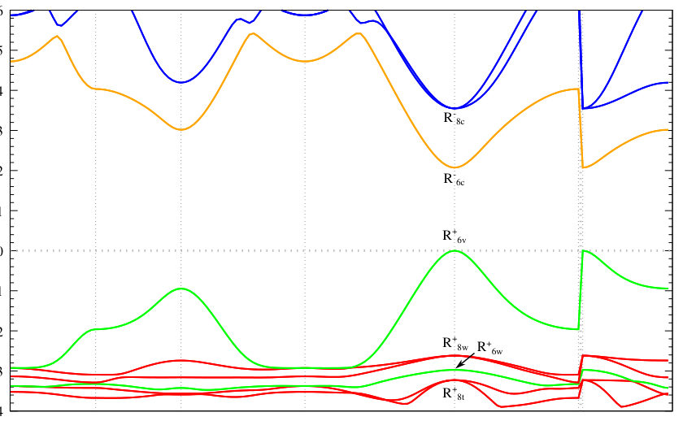
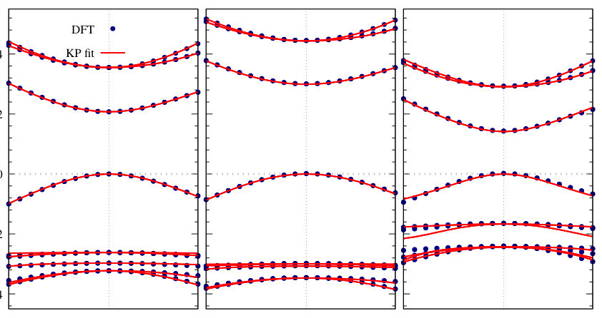
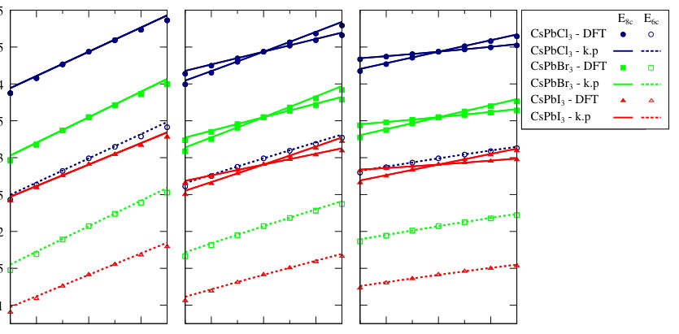
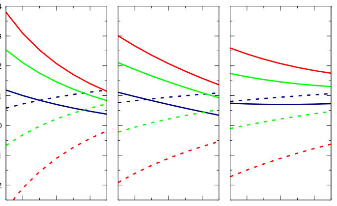
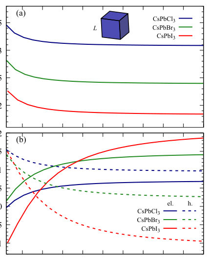
Summary. This paper theoretically examines the strain tunability of electron and hole g-factors in lead-halide perovskites. Using an advanced k.p model parameterized by DFT, the authors show that bulk g-factors can be significantly tuned by strain. Crucially, they contrast this with nanocrystals, where quantum confinement dampens the strain response.
Why it may be interesting. The strong theoretical link between structural strain, band structure modification, and spin properties (g-factors) is highly relevant for designing optoelectronic devices where external mechanical control is possible.
Main problem. The study aims to theoretically investigate how external strain tunes the electron and hole g-factors in inorganic lead-halide perovskites, comparing bulk and nanocrystal behavior.
Main result. The bulk g-factors are highly tunable by external strain, potentially allowing tuning through zero, whereas the g-factors in nanocrystals are much less sensitive to strain due to quantum confinement effects.
Method. The research employs an 18-band k.p model, parameterized using DFT calculations (HSE06 functional), and calculates the g-factors using linear response theory.
Model / system. The physical system is $ ext{CsPb}X_3$ perovskites. The theoretical framework involves an 18-band k.p Hamiltonian, which is augmented by a strain term ($H( ext{str})$) to model external strain effects.
Key observables. Electron and hole g-factors, and their dependence on external strain (hydrostatic, biaxial, uniaxial).
Important parameters / regimes. The k.p model uses 6 lowest-energy conduction bands and 12 highest-energy valence bands; the analysis considers various halide compositions ($ ext{Cl}, ext{Br}, ext{I}$).
Assumptions / limitations. The k.p model is an approximation, and the DFT calculations are performed for zero-temperature systems, neglecting phonon effects.
Figures summary. Figure 1 shows the band structure for $ ext{CsPbBr}_3$ at the $\Gamma$ point, illustrating the irreducible representation of the relevant bands.
Paper structure. The paper first establishes the theoretical framework using the k.p model and DFT inputs, then calculates the strain dependence of the g-factors for the bulk material, and finally contrasts this with the reduced strain sensitivity observed in nanocrystals.
In this paper, we theoretically study the electron and hole $g$-factors in inorganic lead-halide perovskites for the reference cubic phase. We employ an 18-band $k \cdot p$ model and determine its parameters using target band structures obtained from DFT calculations. We use the linear response theory to calculate the $g$-factors and investigate their dependence on external strain. We then perform real-space calculations of the electron and hole $g$-factors in perovskite nanocrystals. We show that the bulk $g$-factors can be tuned over a wide range by external strain. In some cases, strain can be used to tune the $g$-factor through zero. By contrast, the carrier $g$-factors in CsPb$X_3$ nanocrystals are considerably less sensitive to strain due to quantum confinement.
Authors: Gino Biondini, Alexander Chernyavsky, Haodong Lin, John Ringland
Type: theory · Category: other · PDF: https://arxiv.org/pdf/2610.06403v1
Analysis basis: full PDF text, analyzed in chunks
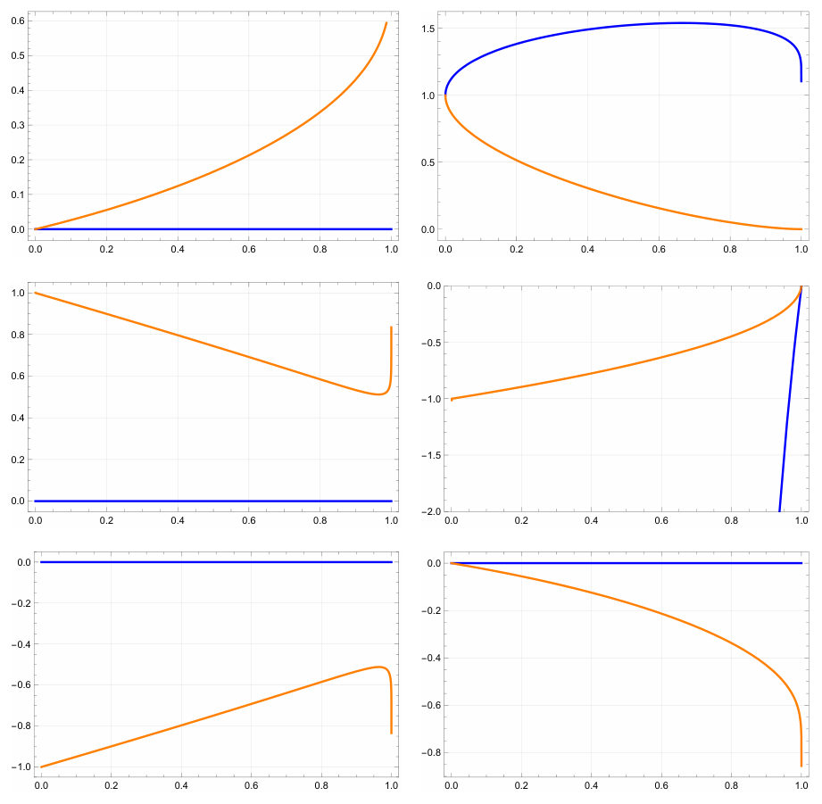
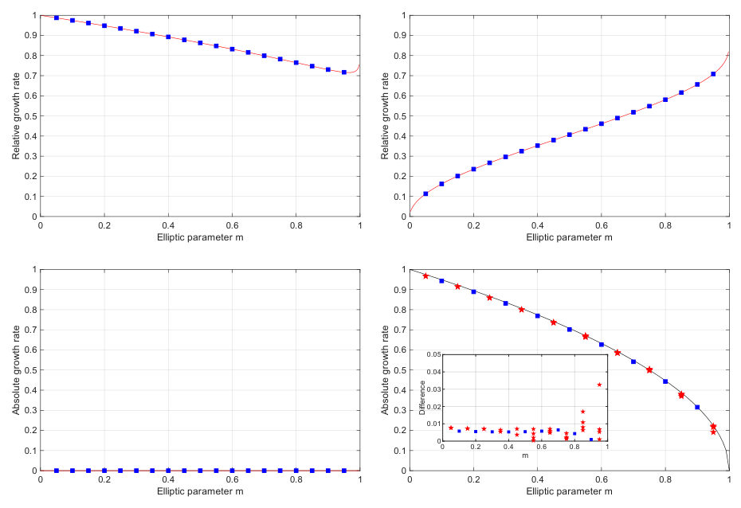
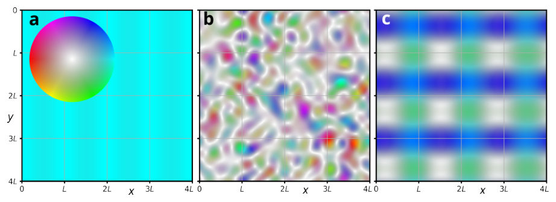
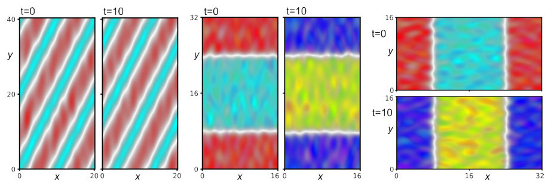
Summary. This paper develops Whitham modulation theory for the Davey-Stewartson (DS) system, a model for nonlinear wave packets coupled to a mean flow. By deriving and analyzing the resulting modulation equations, the authors determine the linear stability of the system's periodic traveling waves. The key finding is that only the defocusing DSII variant exhibits linear stability, providing crucial insight into the physical regimes where such wave trains can persist.
Why it may be interesting. The DS system is a fundamental model in nonlinear wave physics, relevant to optics and fluid dynamics. The application of modulation theory to determine stability in a mean-field coupled system provides general insights into the dynamics of 2D envelope equations.
Main problem. The paper develops Whitham modulation theory for the Davey-Stewartson (DS) system and applies it to analyze the stability of its periodic traveling wave solutions.
Main result. The periodic solutions of the defocusing DSII system were found to be linearly stable, while all other variants of the DS system were determined to be unstable.
Method. The authors employed the multiple scales ansatz and derived the corresponding Whitham modulation equations by averaging the governing equations over the fast periodic variables.
Model / system. The study focuses on the Davey-Stewartson (DS) system, a canonical model describing weakly nonlinear wave packets in two spatial dimensions that interact resonantly with a slowly varying mean flow. The system has four variants determined by the signs of parameters $\sigma$ and $ u$.
Key observables. Linear stability of periodic solutions, the modulation equations themselves, and the dispersion relation $\omega = k_1v_1 - \sigma k_2v_2 - (k_2^2 - \sigma k_1^2)J / ho$.
Important parameters / regimes. The parameters $\sigma$ and $ u$ define the four variants (DSII, DSI), and the small parameter $\epsilon$ governs the semiclassical scaling limit.
Assumptions / limitations. The analysis assumes the validity of the modulation theory framework and that the wave parameters ($ ho, \Phi, P, Q$) are periodic in the fast spatial variable $Z$.
Paper structure. The paper proceeds by first establishing the governing equations for the DS system, then applying the multiple scales ansatz to derive the modulation equations, and finally using these equations to perform the stability analysis for the different system variants.
The Davey-Stewartson (DS) system is a canonical model for a weakly nonlinear wave packet in two spatial dimensions that is resonantly coupled to the slowly varying mean flow it generates, and as such it governs modulated wave trains in settings as different as finite-depth water waves, quadratic optical media and magnetic films. Here we develop the Whitham modulation theory for the DS system and use it to study the stability of its periodic traveling wave solutions. Specifically: 1. We perform a detailed study of the parametric dependence of the periodic solutions of all four variants of the DS system, including their harmonic and soliton limits. 2. We present the formulation of Whitham modulation theory for the DS system and write down the resulting Whitham modulation equations for all four variants of the DS system. 3. We use the resulting modulation equations to study the stability of the periodic traveling wave solutions of all four variants of the DS system. 4. We validate the theoretical predictions by comparing them with a direct linearization of the DS system as well as with the direct numerical simulations of the DS system, showing excellent agreement. The results indicate that the periodic solutions of the defocusing DSII system are linearly stable, whereas those of all other variants of the DS system are unstable. The calculations also evidence many structural features (non-evolutionary modulation equations, constraints on the admissible initial data, and auxiliary mean-field constants absent from the traveling wave solutions yet indispensable to the modulation system) are expected to recur in any two-dimensional envelope equation with mean-field coupling.